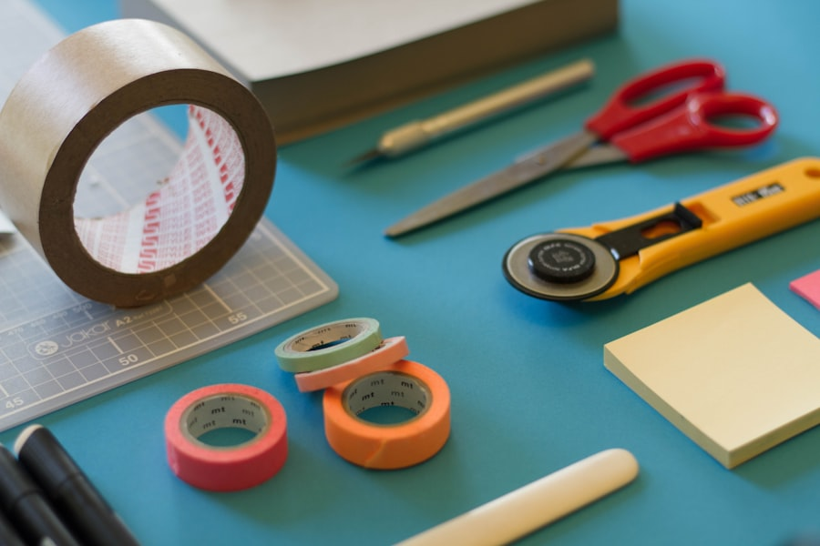

目的： クリエイターとまちの人が出会う場所をつくり、週末の空気をちょっと特別にする。
メッセージ： 大きな会場だけが正解じゃない。あなたのまちの公園や商店街でも、虹色の一日は始められる。
ニジ・サーキットは架空の10周年キャンペーンです。ポートフォリオ用のオリジナル特設LPとして制作しています。
DAYTIME MARKET
ごはんも、色も、まちも、ひとつになる。
ABOUT
目的： クリエイターとまちの人が出会う場所をつくり、週末の空気をちょっと特別にする。
メッセージ： 大きな会場だけが正解じゃない。あなたのまちの公園や商店街でも、虹色の一日は始められる。
ニジ・サーキットは架空の10周年キャンペーンです。ポートフォリオ用のオリジナル特設LPとして制作しています。
LOCAL FIRST
地元の出店・地元の来場者。にぎわいを循環させる設計。
10 YEARS
小さなマルシェから始まった巡回イベントが、全国をつなぐ虹色の回路になりました。
2016
商店街の週末マルシェとしてスタート。出店8店舗。
2019
ライブステージ併設。県外巡回を開始。
2022
キッズワークショップ全国展開。来場者10万人突破。
2026
10周年。全国100ヶ所ポップアップフェア始動。
※年表は架空の設定です
#まちが虹色になる
夜の写真をシェアして、次のまちへつなごう。
EXPERIENCE
買う・聴く・つくる・遊ぶ。一日中たのしめる4つのエリア。

作家もの雑貨・イラスト・テキスタイル。ここでしか出会えない一点もの。
地元キッチンカーとスイーツ屋台。食べ歩きがメインの楽しみ方。
昼はアコースティック、夕方はダンスチューン。タイムテーブルは当日更新。
親子で参加できる工作ブース。虹色バッジづくりが人気メニュー。
EVENT
各会場土・日の2日間（一部3日間）。
会場内の撮影OK。#まちが虹色になる で投稿をお願いします。
GOODS
会場限定の記念アイテム。売り上げの一部は次回巡回のまちおこし基金へ。
10周年ロゴ入り
¥2,800
会場ビジュアル3種
¥4,500

おうちで虹バッジ
¥1,800
※価格・仕様は架空の表示です
SCHEDULE
第1回
会場：サンプル公園（架空）
金・土・日の3日間。事前申込制。
第2回
会場：サンプル港倉庫（架空）
金・土・日の3日間。事前申込制。
CONTACT
会場提供・出店応募、または一般的なお問い合わせ（モックのため送信未接続）。